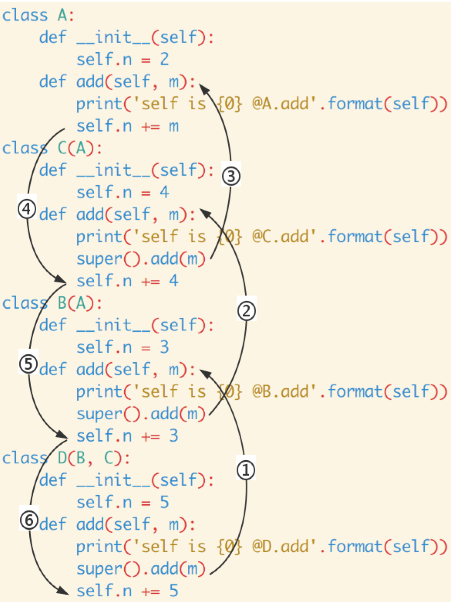

说到 super， 大家可能觉得很简单呀，不就是用来调用父类方法的嘛。如果真的这么简单的话也就不会有这篇文章了，且听我细细道来。
约定
在开始之前我们来约定一下本文所使用的 Python 版本。默认用的是 Python 3，也就是说：本文所定义的类都是新式类。如果你用到是 Python 2 的话，记得继承 object:
# 默认， Python 3
class A:
pass
# Python 2
class A(object):
pass
Python 3 和 Python 2 的另一个区别是: Python 3 可以使用直接使用 super().xxx 代替 super(Class, self).xxx :
# 默认，Python 3
class B(A):
def add(self, x):
super().add(x)
# Python 2
class B(A):
def add(self, x):
super(B, self).add(x)
所以，你如果用的是 Python 2 的话，记得将本文的 super() 替换为 suepr(Class, self) 。
如果还有其他不兼容 Python 2 的情况，我会在文中注明的。
单继承
在单继承中 super 就像大家所想的那样，主要是用来调用父类的方法的。
class A:
def __init__(self):
self.n = 2
def add(self, m):
print('self is {0} @A.add'.format(self))
self.n += m
class B(A):
def __init__(self):
self.n = 3
def add(self, m):
print('self is {0} @B.add'.format(self))
super().add(m)
self.n += 3
你觉得执行下面代码后， b.n 的值是多少呢？
b = B() b.add(2) print(b.n)
执行结果如下:
self is <__main__.B object at 0x106c49b38> @B.add self is <__main__.B object at 0x106c49b38> @A.add 8
这个结果说明了两个问题:
- 1、super().add(m) 确实调用了父类 A 的 add 方法。
- 2、super().add(m) 调用父类方法 def add(self, m) 时, 此时父类中 self 并不是父类的实例而是子类的实例, 所以 b.add(2) 之后的结果是 5 而不是 4 。
不知道这个结果是否和你想到一样呢？下面我们来看一个多继承的例子。
多继承
这次我们再定义一个 class C，一个 class D:
class C(A):
def __init__(self):
self.n = 4
def add(self, m):
print('self is {0} @C.add'.format(self))
super().add(m)
self.n += 4
class D(B, C):
def __init__(self):
self.n = 5
def add(self, m):
print('self is {0} @D.add'.format(self))
super().add(m)
self.n += 5
下面的代码又输出啥呢？
d = D() d.add(2) print(d.n)
这次的输出如下:
self is <__main__.D object at 0x10ce10e48> @D.add self is <__main__.D object at 0x10ce10e48> @B.add self is <__main__.D object at 0x10ce10e48> @C.add self is <__main__.D object at 0x10ce10e48> @A.add 19
你说对了吗？你可能会认为上面代码的输出类似:
self is <__main__.D object at 0x10ce10e48> @D.add self is <__main__.D object at 0x10ce10e48> @B.add self is <__main__.D object at 0x10ce10e48> @A.add 15
为什么会跟预期的不一样呢？下面我们将一起来看看 super 的奥秘。
super 是个类
当我们调用 super() 的时候，实际上是实例化了一个 super 类。你没看错， super 是个类，既不是关键字也不是函数等其他数据结构:
>>> class A: pass ... >>> s = super(A) >>> type(s) <class 'super'> >>>
在大多数情况下， super 包含了两个非常重要的信息: 一个 MRO 以及 MRO 中的一个类。当以如下方式调用 super 时:
super(a_type, obj)
MRO 指的是 type(obj) 的 MRO, MRO 中的那个类就是 a_type , 同时 isinstance(obj, a_type) == True 。
当这样调用时:
super(type1, type2)
MRO 指的是 type2 的 MRO, MRO 中的那个类就是 type1 ，同时 issubclass(type2, type1) == True 。
那么， super() 实际上做了啥呢？简单来说就是：提供一个 MRO 以及一个 MRO 中的类 C ， super() 将返回一个从 MRO 中 C 之后的类中查找方法的对象。
也就是说，查找方式时不是像常规方法一样从所有的 MRO 类中查找，而是从 MRO 的 tail 中查找。
举个例子, 有个 MRO:
[A, B, C, D, E, object]
下面的调用:
super(C, A).foo()
super 只会从 C 之后查找，即: 只会在 D 或 E 或 object 中查找 foo 方法。
多继承中 super 的工作方式
再回到前面的
d = D() d.add(2) print(d.n)
现在你可能已经有点眉目，为什么输出会是
self is <__main__.D object at 0x10ce10e48> @D.add self is <__main__.D object at 0x10ce10e48> @B.add self is <__main__.D object at 0x10ce10e48> @C.add self is <__main__.D object at 0x10ce10e48> @A.add 19
了吧 ;)
下面我们来具体分析一下:
D 的 MRO 是: [D, B, C, A, object] 。 备注: 可以通过 D.mro() (Python 2 使用 D.__mro__ ) 来查看 D 的 MRO 信息）
-
详细的代码分析如下:
class A: def __init__(self): self.n = 2 def add(self, m): # 第四步 # 来自 D.add 中的 super # self == d, self.n == d.n == 5 print('self is {0} @A.add'.format(self)) self.n += m # d.n == 7 class B(A): def __init__(self): self.n = 3 def add(self, m): # 第二步 # 来自 D.add 中的 super # self == d, self.n == d.n == 5 print('self is {0} @B.add'.format(self)) # 等价于 suepr(B, self).add(m) # self 的 MRO 是 [D, B, C, A, object] # 从 B 之后的 [C, A, object] 中查找 add 方法 super().add(m) # 第六步 # d.n = 11 self.n += 3 # d.n = 14 class C(A): def __init__(self): self.n = 4 def add(self, m): # 第三步 # 来自 B.add 中的 super # self == d, self.n == d.n == 5 print('self is {0} @C.add'.format(self)) # 等价于 suepr(C, self).add(m) # self 的 MRO 是 [D, B, C, A, object] # 从 C 之后的 [A, object] 中查找 add 方法 super().add(m) # 第五步 # d.n = 7 self.n += 4 # d.n = 11 class D(B, C): def __init__(self): self.n = 5 def add(self, m): # 第一步 print('self is {0} @D.add'.format(self)) # 等价于 super(D, self).add(m) # self 的 MRO 是 [D, B, C, A, object] # 从 D 之后的 [B, C, A, object] 中查找 add 方法 super().add(m) # 第七步 # d.n = 14 self.n += 5 # self.n = 19 d = D() d.add(2) print(d.n)调用过程图如下:
D.mro() == [D, B, C, A, object] d = D() d.n == 5 d.add(2) class D(B, C): class B(A): class C(A): class A: def add(self, m): def add(self, m): def add(self, m): def add(self, m): super().add(m) 1.---> super().add(m) 2.---> super().add(m) 3.---> self.n += m self.n += 5 <------6. self.n += 3 <----5. self.n += 4 <----4. <--| (14+5=19) (11+3=14) (7+4=11) (5+2=7)
现在你知道为什么 d.add(2) 后 d.n 的值是 19 了吧 ;)
文章来源：https://mozillazg.com/2016/12/python-super-is-not-as-simple-as-you-thought.html